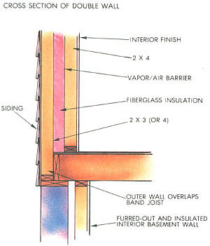
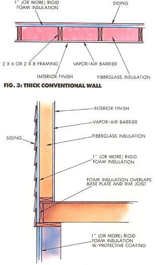

Superinsulation For The Masses
Designers are blending the best of a variety of techniques to make better buildings, including double wall construction, conservation levels, Larsen truss, thick conventional walls, diagrams and cross-sections.
By the Mother Earth News editors
September/October 1986
Issue #101 - September/October 1986
As Lester Brown points out in this issue's interview, the recent drop in the price of oil is a temporary situation. Eventually - certainly within the life span of a well-constructed home (and probably very much sooner) - that price is bound to rise.
The present economic breather, however, would seem to be an ideal time to build a new home. Mortgage rates are low, and building material costs are stable. Perhaps more important, though, energy-efficient design techniques that have been in development for the last 15 years are now mature.
The next 15 years will no doubt see many more advances, but the intensive research and the trial-and-error practices of the last decade and a half have brought energy-conserving design to a remarkable position today. The basic principles and the practical methods are now established. Better yet, this understanding has brought the language of design down from lofty mathematics to everyday "rules of thumb" - guidelines to build by.
Superinsulation's Wide Application
Every truly energy-efficient home being built today employs a heavy layer of insulation and is well sealed. The cardinal rule of thumb is: Worry about saving the energy you've got before you spend money finding more. Consequently, insulation and air-leakage control make up the basis upon which other energy-saving schemes can be developed.
Because superinsulation is largely a matter of building technique - from wall-framing systems to outlet seals - the lessons are applicable to just about any sort of building, even one that's being retrofitted to improve its energy efficiency. Therefore, anyone who's contemplating either new construction or remodeling can benefit from a review of the methods of superinsulation.
Conservation Levels
Insulation: To be considered superinsulated, a house must have wall and window R-values roughly twice as high as those dictated by area building codes. In general, this level will also be the most cost-effective, but there are a couple of important qualifiers: Framing for thick insulation is far more expensive than the insulation itself. So, if more insulation can be installed without adding costly framing, it may be beneficial to go beyond the twice-code R-value recommendation. Also, if you're able to make use of passive solar gain through south windows, double glazing (which transmits more radiation than glazing with more layers does) may be justified. Triple or quadruple units should be used on the north, east, and west.
Because they present a conductive path from the inside to the outside, chimneys are rarely installed in superinsulated houses. Besides, wood heat isn't well adapted to houses with low (and intermittent) auxiliary heating needs.
Base plates and sills are a couple of difficult spots to insulate, but it's important to arrange those wooden members so they can be thoroughly covered. In a house with R-30 or R-40 walls, the roughly R-3 presented by 1-1/2 inches of wood is the equivalent of a hemorrhage. Similarly, highly conductive concrete areas - such as foundations, footings, and slabs (when used) - should also be heavily insulated.
Cooling is a problem that superinsulation techniques only partially address. Recent research has revealed that, though insulation is helpful in keeping heat out, radiant barriers are more cost-effective. A radiant barrier consists of a layer of foil (with an air space next to it) that reflects energy radiating toward it. These can consist of sheets of foil attached to the undersides of rafters, of foil-faced rigid foam insulation, or of several other possibilities. However, even radiation barriers may not be sufficient to passively cool a superinsulated house, because heat is only part of the problem; moisture may account for more than half of the cooling load in Southern states, and only ventilation or mechanical dehumidification can handle that.
Air leakage: Infiltration should be controlled to the greatest degree possible. A continuous air/vapor barrier should enclose the building, and all seams should be lapped and sealed with an appropriate caulk. Particular attention should be paid to sealing electrical outlets, plumbing passes, and window jambs with tape and caulk. If at all possible, avoid recessed lighting that would ofer a leakage path from the home's interior to the attic. Double doors or an air-lock entry are often used, though the latter is increasingly considered not to be cost-effective. Once the infiltration is controlled, use an air-to-air heat exchanger to maintain an air exchange rate of about one-half of the building's volume per hour.
Windows: A house that's designated strictly as superinsulated has a south-facing window area equal to only about 5% of the building's floor area, but blends of superinsulation and passive solar may have more south glass. Don't exceed about 7% south glass without adding thermal mass (beyond that found in standard 1/2" drywall construction with wood or covered concrete floors). Windows facing other directions should total about 5% of the floor area, bringing the aggregate glass area to about 10% of the total floor area. Most designers prefer casement windows because they seal well and enhance ventilation when they're open. Use fixed windows wherever practical; they are less expensive and offer the best seal.
The Tricky Case of Earth Sheltering
In general, superinsulation practices apply directly to other types of energy-efficient construction, but there are some areas where the degree of insulation may come into question.
In earth shelters, for example, some designers contend that the floor and the walls below frost line shouldn't be insulated. The theories cited to support this approach are that the mass of the earth outside the walls can be used to store heat gained from the sun and that the earth's comparatively cool temperature in summer will help keep the space comfortable during the dog days.
Before you decide to go along with these arguments, here are a few things to consider. In areas where summer humidity goes above 60% or 70%, condensation is very likely to be a problem on the inside surface of uninsulated, below-grade masonry walls and floors. Dew point temperatures can exceed 70°F in many parts of the U.S., and uninsulated below-grade walls are likely to be cooler than that.
In addition, if there is much need for heat in the winter, the floors and walls may be uncomfortably cool during that season. The earth temperature at a 25-foot depth is likely to stabilize at around the average annual air temperature for your locale. Above that depth, the situation worsens.
The supposition that the earth outside the walls can be used for heat storage is probably wrong in most cases, as well. Unless the design employs techniques to isolate the earth from the surface (as in "Passive Annual Heat Storage"; see issue 91, page 46), heat storage on an annual basis is probably negligible. And on a daily schedule, heat flux through masonry is limited to a useful thickness of about four inches.
If you're building an earth shelter, we recommend that you use at least an inch of rigid foam under the floor and outside below-frost line walls, unless you live in a desert climate. Insulation above frost line should be at least to code.
Building Techniques
Most superinsulated houses are built of wood, though competitive R-values can be achieved using special masonry systems. Because the masonry approach is largely pre-engineered for new construction and isn't widely applicable to retrofits, we'll stick to wood in this discussion.
Double walls: Traditional superinsulation, as it originated in Canada, employs two adjacent walls: an inner, structural one built from 2 X 4s and an outer, nonstructural one consisting of 2 X 4s, as shown in Fig. 1. The space between the walls is filled with insulation, so there's no wooden thermal bridge from inside to outside. Today, this technique is still used, but other less-expensive approaches are often preferred.
Staggered double wall: The amount of framing lumber for a double wall can be cut by staggering the 2 X 4 studs to the inside and outside, also shown m Fig. 1. All of the members are structural, but the plates - the only conductive paths from inside to outside - must be as wide as the walls.
Larsen Truss: This is a trademarked system of nonstructural built-up plywood braces that support the outer wall and a thick layer of insulation. (See Fig. 2.) It is often less expensive to use than double-wall construction, particularly in two-story superinsulated houses.
Thick conventional wall: 2 X 6 or 2 X 8 fully insulated studs can be used in conjunction with an inch or more of rigid foam insulation on the outside to form walls with R-values of greater than 30. The exterior foam should cover all wooden members, including the bottom plates, sills, rim joists, etc., as shown in Fig. 3. Materials are more expensive than are those for conventional construction, but the labor is about the same. Because contractors are familiar with the techniques necessary, this is the most commonly used approach to achieving high R-value walls.
It is currently believed that the vapor barrier formed on the outside by the impermeable foam insulation doesn't cause condensation problems inside the wall, as long as the inner vapor barrier is effective. In fact, it's now recognized that the vapor barrier should go on the side of the wall where humidity is highest, and in many climates that will change with the seasons. Therefore, a double vapor barrier may actually be the right choice in temperate climates.
Superinsulation techniques can be used in new or retrofit construction.
Panelization: One energy-efficient construction approach that's gaining a lot of popularity is called panelization - a system by which walls are built in a factory and trucked to the building site. Though it's not exactly an owner-builder technique, panelization has significant advantages for energy-efficient construction.
The basic principle is to assemble walls in sections at least four-feet wide and full height. Foam insulation is sandwiched between the interior finish (drywall, perhaps) and the exterior siding or sheathing. All wiring and electrical boxes are installed at the plant, and the air/vapor barrier is carefully integrated. The panels are bonded with glue and held in a press during setting so that the interior and exterior layers add to overall strength.
Aside from the fact that panelized houses can be put up very quickly, the quality control possible when walls are assembled inside a factory make it easy to build a very well-sealed house. In the future, you're likely to see panelization used widely both to build energy-efficient mass-produced housing and to blanket post-and-beam dwellings.
Roofs: Trussed roofs with attics are generally used in superinsulated construction, because the deep webs make the installation of 15 or more inches of loose insulation simple. There have been reports, however, of ceilings pulling away from interior partitions in some trussed systems; this may happen when only one of the three cords of the truss is buried in insulation and kept warmer than the others. An alternate approach is to use thick layers of rigid foam insulation for roof construction. This allows an air space to be left next to a sheet with foil facing to form a radiant energy barrier.
There are, of course, numerous other perfectly good approaches to increasing the energy-efficiency of your home. We've discussed only a few of the more common ones here, in the hope that the concepts will inspire you. Energy-efficient construction is as much a state of mind as it is a careful application of the right materials.
|
 |
 |
 |